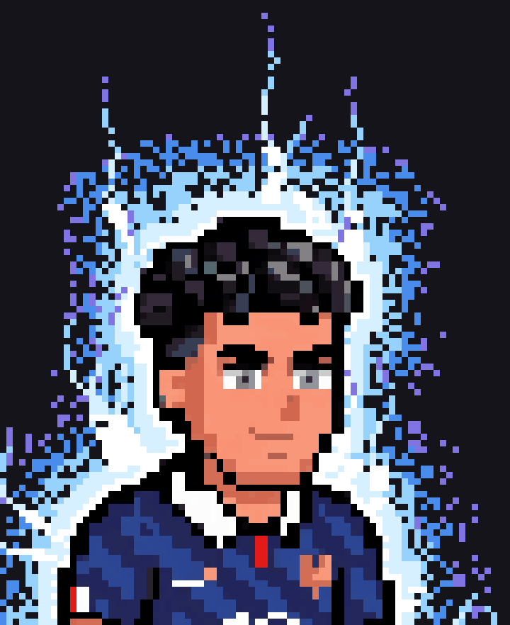
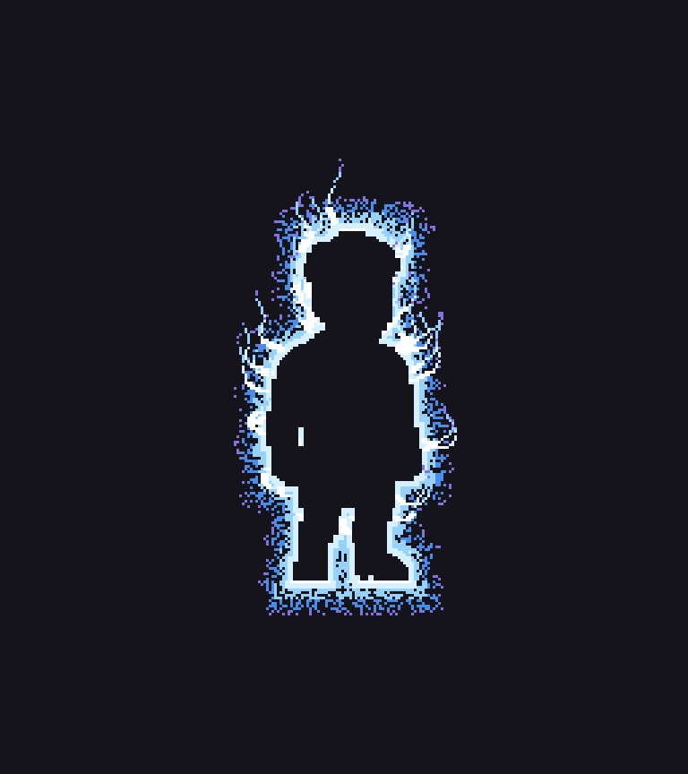
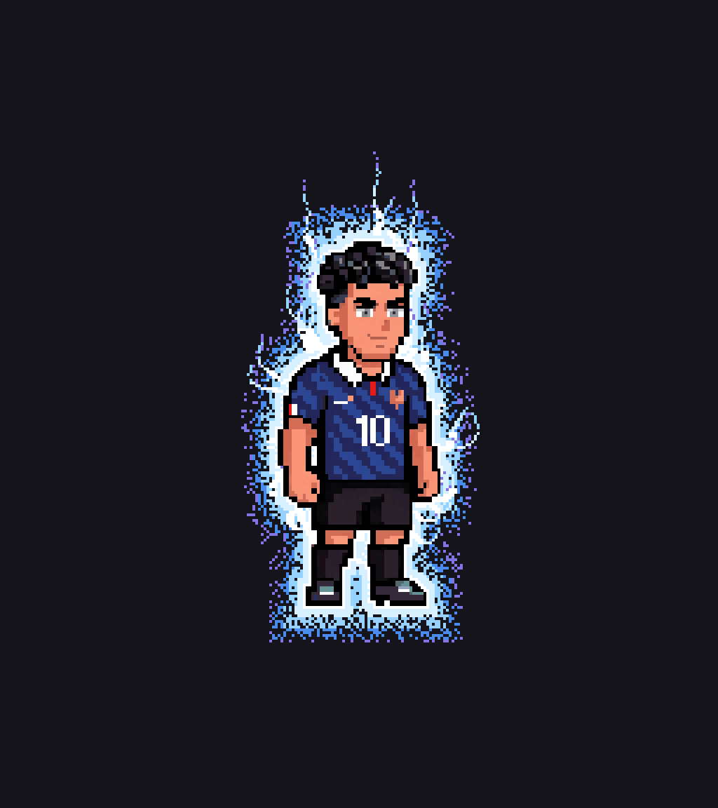
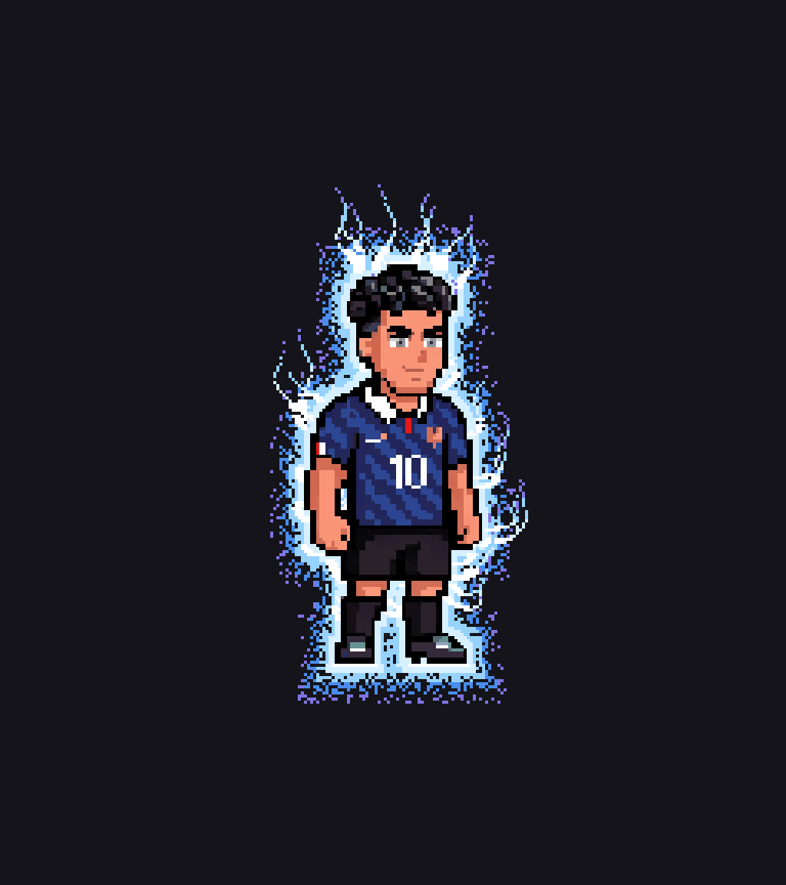
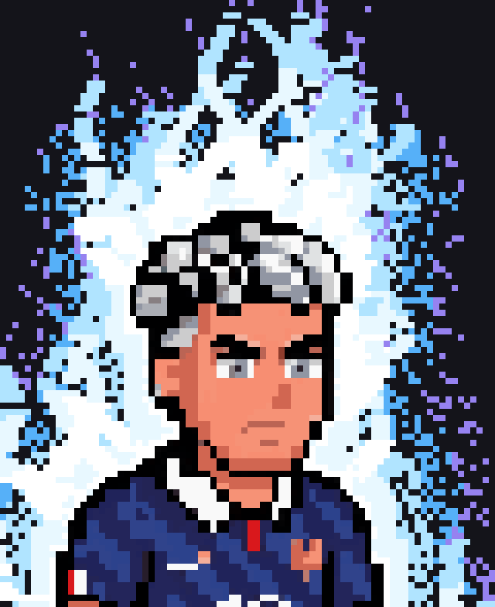
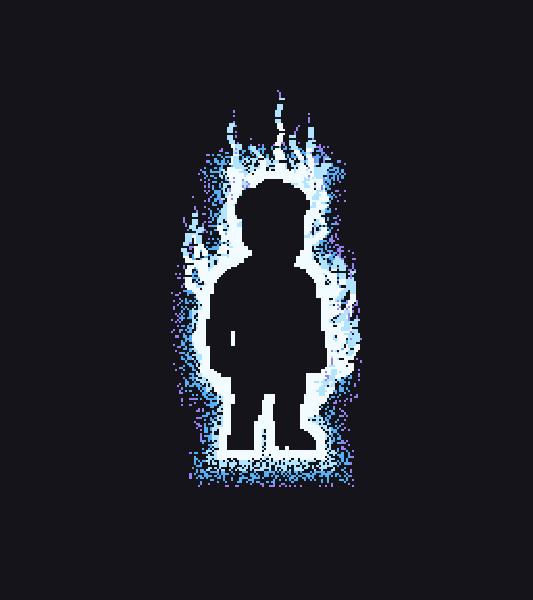
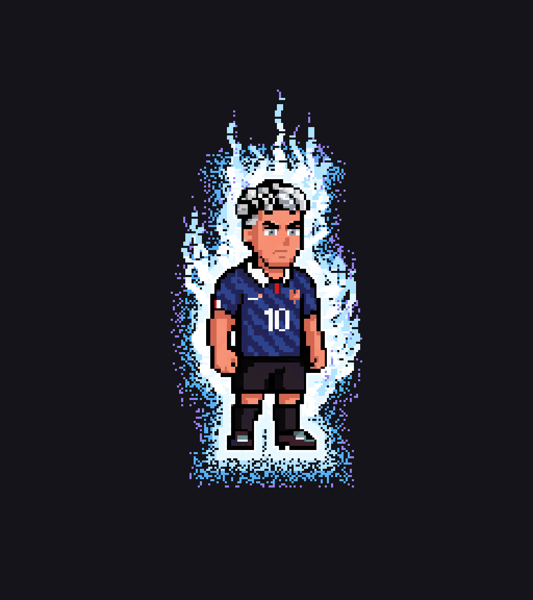
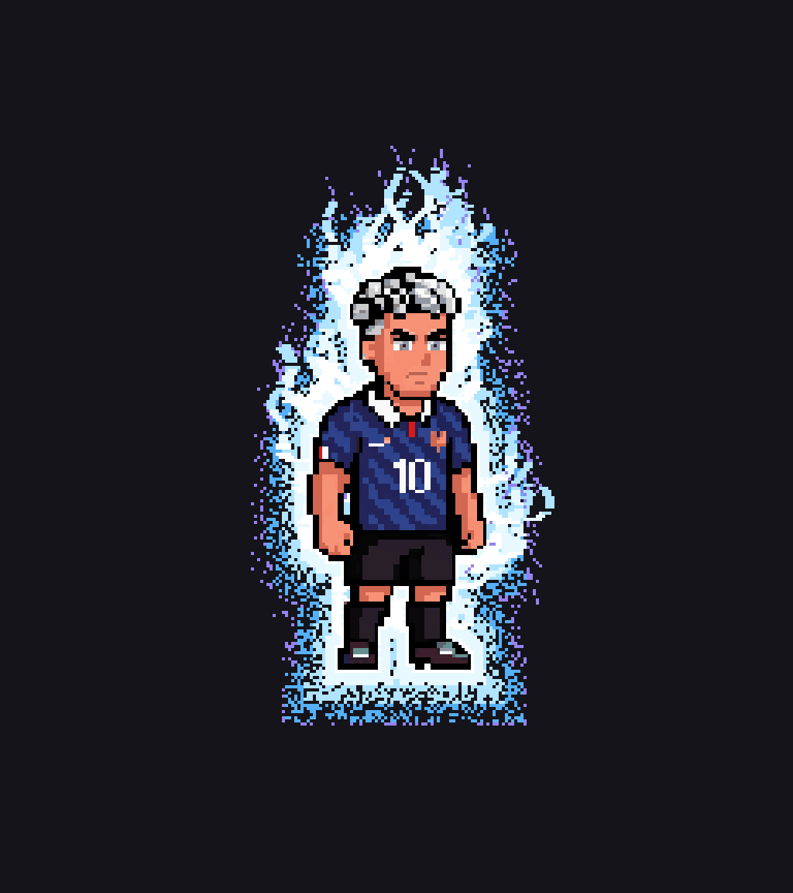
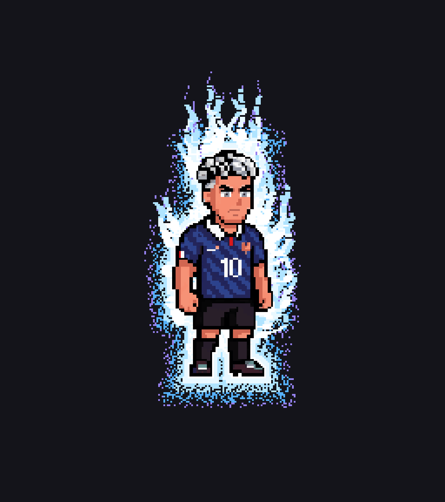

1. Ultra Instinct Sign
Calmer: tight radiant rim with 44 vapour tongues rising off the body

Idle



Blue Evolved → UI Sign — 17 frames


Stills



Commit 55de05c
The aura now emits vapour: tapering tongues that peel off the body, flow outward, bend upward and dissipate into violet at the tip, over a tight radiant rim. The field was pulled in so the strands read against clean space instead of being swallowed by speckle. No dark ring, no loops, body sprites unchanged.
Calmer: tight radiant rim with 44 vapour tongues rising off the body




Same energy, fuller: 66 tongues and roughly 1.7× the vapour








